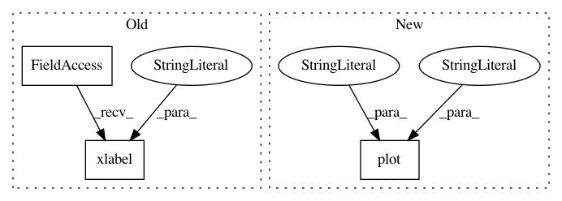

58d21081b729d857884d9c38e6e9122b7b61a27e,examples/datasets/plot_sdss_spectrum.py,,,#,12
Before Change
spec = fetch_sdss_spectrum(plate, mjd, fiber)
plt.plot(spec.wavelength(), spec.spectrum, "-k")
plt.xlabel(r"$\lambda (\AA)$")
plt.ylabel("Flux")
plt.title("Plate = %(plate)i, MJD = %(mjd)i, Fiber = %(fiber)i" % locals())
plt.show()
After Change
// Plot the resulting spectrum
ax = plt.axes()
ax.plot(spec.wavelength(), spec.spectrum, "-k", label="spectrum")
ax.plot(spec.wavelength(), spec.error, "-", color="gray", label="error")
ax.legend(loc=4)
ax.set_title("Plate = %(plate)i, MJD = %(mjd)i, Fiber = %(fiber)i" % locals())
In pattern: SUPERPATTERN
Frequency: 3
Non-data size: 3
Instances
Project Name: astroML/astroML
Commit Name: 58d21081b729d857884d9c38e6e9122b7b61a27e
Time: 2012-10-21
Author: vanderplas@astro.washington.edu
File Name: examples/datasets/plot_sdss_spectrum.py
Class Name:
Method Name:
Project Name: mne-tools/mne-python
Commit Name: 0706ad95fa091003f29bd1d568a17324453bb297
Time: 2018-09-15
Author: jasmainak@users.noreply.github.com
File Name: examples/inverse/plot_lcmv_beamformer_volume.py
Class Name:
Method Name:
Project Name: mne-tools/mne-python
Commit Name: 64be522285d5eeea4e3fb4c6df133984fc65b74e
Time: 2018-09-08
Author: larson.eric.d@gmail.com
File Name: examples/time_frequency/plot_compute_source_psd_epochs.py
Class Name:
Method Name: